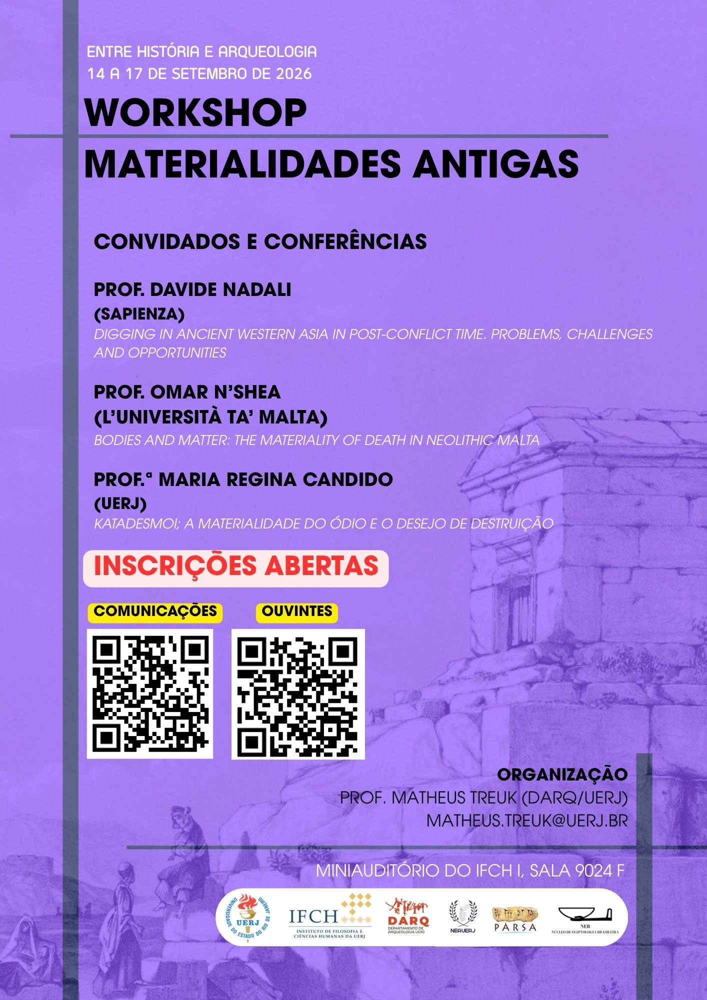

14–17 September 2026 / 14–17 de setembro de 2026
Universidade do Estado do Rio de Janeiro (UERJ)
Miniauditório do IFCH I – Room 9024F / Sala 9024F

O I Workshop Materialidades Antigas reunirá pesquisadores brasileiros e estrangeiros para discutir diferentes aspectos da cultura material no mundo antigo. O evento contará com conferências, comunicações acadêmicas e um minicurso voltado à Comunicação Arqueológica.
The I Workshop on Ancient Materialities will bring together Brazilian and international scholars to discuss different aspects of material culture in the ancient world. The event will feature keynote lectures, academic papers, and a short course on Archaeological Communication.
Organização / Organised by
PĀRSA – Achaemenid Studies Group
Laboratório do Antigo Oriente Próximo (LAOP/UERJ)